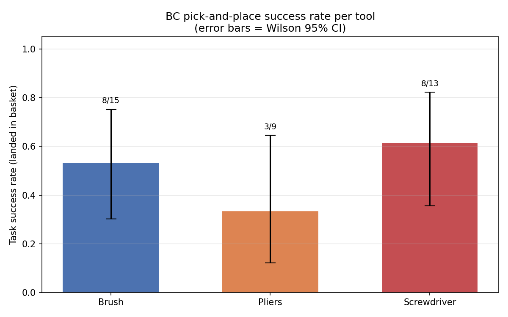

Training Loss
BC policy training and validation loss over epochs.

The full pipeline runs in six stages: (1) collect segmentation frames automatically, (2) train a CNN to identify objects, (3) record manual teleoperation demonstrations, (4) expand demos with Isaac Lab Mimic, (5) train a BC policy, and (6) evaluate policy rollouts in simulation.


This project tackles goal-conditioned robot manipulation — given a spoken command (e.g. "pick the brush"), a Franka Panda robot must identify the correct tool among four similar-looking objects on a pegboard and place it in a basket.
We train entirely in simulation using NVIDIA Isaac Lab. A U-Net / ResNet-18 CNN is first trained on segmentation masks to give the robot visual perception. Human demonstrations are then recorded via keyboard teleoperation and expanded using Isaac Lab Mimic to generate a large synthetic dataset (≈160 human demonstrations amplified to over 3,000). A Behaviour Cloning (BC) policy is then trained on this dataset.
The video below demonstrates the full pipeline from data collection to policy evaluation.
BC policy training and validation loss over epochs.
Task success rate per tool (object landed in basket), with Wilson 95% confidence intervals.

Segmentation model accuracy across all object classes.

How closely the BC policy replicates human demonstrations per object.

The behaviour cloning policy successfully learned to approach and grasp the commanded tool in simulation. Mimic data augmentation significantly increased the number of training trajectories available without additional human effort.
Key limitations include covariate shift during carry (the robot's gripper behaviour after grasping was unreliable) and the sim-to-real gap — the policy has not yet been tested on a physical UR3e. Future work would apply PPO fine-tuning with improved reward shaping (grasp progress + lift progress) to fix the carry phase.